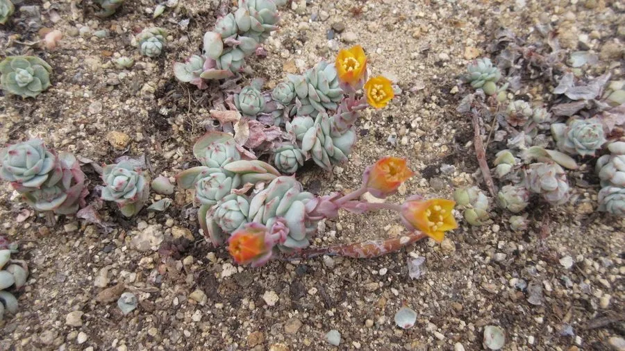

多肉植物 · 植物界
静夜 Echeveria derenbergii

景天科拟石莲花属小型多肉，莲座紧凑、叶尖带红晕，像一朵盛开的绿色玫瑰，原产墨西哥瓦哈卡州山地。
- 分类
- 门被子植物门纲木兰纲目虎耳草目科景天科属拟石莲花属
- 栖息环境
- 墨西哥瓦哈卡州干旱山地的岩石缝隙，喜光、干燥、通风
- 地理分布
- 原产墨西哥瓦哈卡州，世界各地广泛盆栽
- 保护级别
- 暂无评估
物种志
静夜为景天科拟石莲花属小型多肉植物，植株呈紧密的莲座状，直径 5–8 厘米，叶片倒卵形，长 1.5–3 厘米，淡绿色至蓝绿色，表面覆一层薄白粉，叶尖在光照充足时泛红。花葶自叶腋抽出，花小，黄色或橙黄色，花期 4–6 月；果实为蓇葖果。
静夜原产墨西哥瓦哈卡州的干旱山地，喜阳光充足、凉爽干燥和通风良好的环境，耐旱怕涝，夏季高温时进入休眠。它容易群生，母株基部会长出小侧芽，形成紧凑的多头莲座；叶插和分株都很容易成活，是新手入门的常见品种。养护时注意避免叶心积水，否则容易烂心；春秋生长季可充分浇水，夏季则需控水遮阴，盆土以颗粒为主并保持通风。
形态与习性
- 株高莲座直径 5–8 厘米，高约 5 厘米
- 花期4–6 月，花小，黄色或橙黄色
- 果期花后结蓇葖果
- 光照喜充足阳光，夏季高温需遮阴
- 水分耐旱，见干见湿，忌叶心积水
- 土壤疏松透气、排水良好的颗粒土
- 繁殖叶插、分株或枝插
趣味知识
- 静夜叶尖的红晕在光照充足、温差较大时最明显。
- 它容易在母株基部萌发侧芽，养成多头群生的莲座。
- 叶插时把叶片平放在颗粒土上，保持微潮即可生根发芽。
- 养护时若叶心长期积水，容易导致烂心甚至整株死亡。